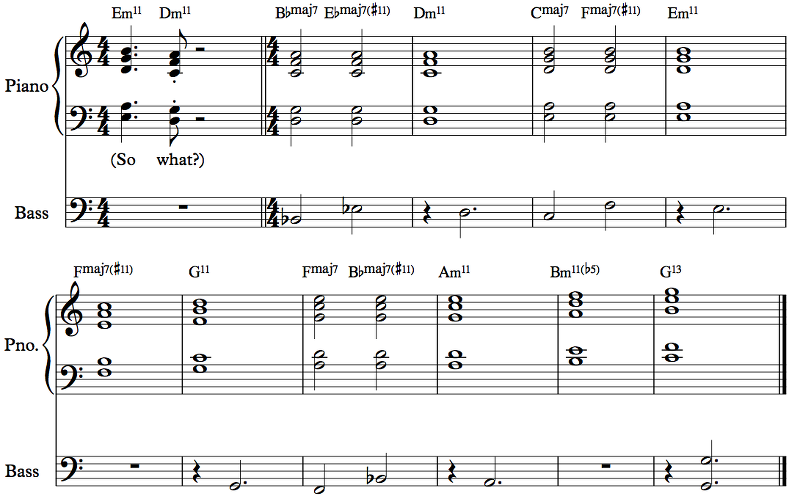

We talked about chords in the classical sense. We talked about expanding these chords with extensions. We talked about rethinking these chords as scales. What's left? Well, in real music there's plenty of harmony that defies these categories. We talked mostly about chords with function, but one can very, very easily play notes together that have no particular function. They don't want to go anywhere; they just are. The harmonic world contains riches far beyond these, with the unnamed chords of the deep, but you'll have to explore them yourself.
Wikipedia, though, has a bunch of specific chords that are famous for one reason or another buried in its list of chords. Let's look at those:

Example 6.47
The alpha chord is basically an entire diminished scale played at once. It consists of two dim7 chords a semitone apart. The beta chord is a subset of the alpha chord, and the gamma chord is another subset. (Actually, the Petrushka chord is another subset, but we'll talk about that one in a bit.) The use of subsets of the alpha chord in a diatonic fashion makes the alpha chord the complexe sonore.
Yes. But sometimes that kind of thing is what you need. However, it's more of a theoretical concept than a practical one. The symmetry of the chord means that any subset by a minor third or tritone is another subset of the same chord. Nicer-sounding subsets (there are four major triads in there, for example, and four minor triads too, four dominant sevenths, four minor sevenths...) can be put in minor third relationships to create interesting music.
The two Bridge chords (named after composer Frank Bridge) are an example of bitonality. You can hear one right around 5:15 in his Piano Sonata, and it's then arpeggiated, though not with the overlapping you see here: the Cm is in a lower octave than the D. The rest of the piece is full of interesting chords and bitonality, but it takes serious study of the piece to understand it; a simple listening will get very little of it across.
The dream chord, named for La Monte Young's Four Dreams of China, is from the nightmare of music students everywhere and the fondest dreams of their teachers. Young loved composing with long tones, similar to the deep listening we did in the previous chapter (yeah, that was just last chapter), but this time with more dissonant sounds resembling the hums of power lines. Some of his music is on YouTube and I encourage you to listen to it. I couldn't find this specific chord, but we're talking about literally hours of long notes held for a long time, with some changing from time to time, some new notes coming in and old ones leaving, the sound evolving. This is minimalist music where nothing happens. It's not everyone's cup of tea, but there's another aspect: this music isn't meant to be heard. It's meant to be experienced. Imagine this. You walk into an installation, a dark room with colored lights here and there, and a few notes are just held there for a while. Eventually, one of them gets softer and another gets louder, and the colors slowly change, the room still dark. The sound is coming from all around you, different sounds from different places, and as you move, the sound changes. That is the context of the dream chord. The great thing is that music exists all around you if only you care to look. Long sounds like the sounds of transformers and power lines, the rhythms of the trucks backing up, beeping around, the wind in the trees, the muted chatter of the passers-by, the bells tolling.
No. But I experienced this kind of thing in college and it completely changed the way I think of music and sound. I think all you need is... the right emotional state and the wrong amount of sleep.
...the right emotional state and the wrong amount of sleep. I think love actually makes it harder. The better time is after a failure of love. If you are happily partnered, you may be SOL.
Probably? The point is, kids, don't do drugs. You can get the same results by pulling an all-nighter and just tuning in to the world around you.
The Elektra chord is from Richard Strauss's opera Elektra (happens about 30 seconds in, and presumably a bunch of times thereafter), where it is the harmonic motif for the titular character.
The Farben chord is from Arnold Schoenberg's piece called Farben, where it opens the piece.
The magic chord is from another of La Monte Young's long note music, this time the Well-Tuned Piano, featuring a piano tuned in a special way to create interesting notes and chords. You can hear a performance of this piece here; it's five hours long; the chord starts to build about 22 minutes in. The special sound of the chord is due to the special tuning and is only barely represented in the rendering above; you should try to listen to the actual recording (not all five hours, obviously) to get a feel for this craziness. Don't fall asleep listening to this music or I guarantee you your nightmares will scare you for the rest of your life. One thing worth noting is that some of the concepts explored in this piece have been ported to videogames, especially the more modern ones that eschew the musical paradigm of, say, Super Mario Bros. and go for something more abstract. The music in the game may even be aleatoric — random — and procedurally generated. That kind of thing is mildly disturbing while playing the game, which I suppose is the point, but most audiences wouldn't want to hear it in a concert hall. Well, some would.
The mu chord is what actually started this little adventure into Wikipedia's weird chords list. Someone mentioned it in the music theory subreddit and I was wondering what it was. Turns out it's just Steely Dan's name for a major add9 chord. There's a whole page dedicated to this chord. Honestly, I don't see the big deal. Add a 9 to your major chords, OK, so? We're not talking some special usage here. We're talking about literally adding a 9 to the major chords you were already playing.
The mystic chord, also known as the Prometheus chord, comes from Alexander Scriabin's Prometheus: Poem of Fire, a piece for piano, orchestra, (optional) choir, and... a color organ, making colored lights happen in the hall. It sounds like regular lighting design today, but the lights are actually in the score, and this was not usually done in Scriabin's time. This is a great video of a project to perform it the way Scriabin envisioned it at... sorry... Yale. The actual performance in the video begins (with the Prometheus chord) at about 9:45. Scriabin didn't use the chord itself very much, actually; mostly, he used the notes in the chord (the so-called Prometheus scale, which in C goes C D E F# A Bb, same as lydian dominant but without the 5) to form melodies and smaller structures, often in transpositions. It's the kind of thing that takes a deeper study of Scriabin's work to understand and analyze, but it's still cool to watch the performance. The colors are actually written in musical notation in the score, which is crazy; the notes correspond to specific colors. Despite the thing being at Yale, I encourage you to watch the whole video. See if you can pick out subsets of the chord in the melodies.
Oh, it's just that Yale sucks. Go to www.safetyschool.org. (Can't believe that still works after so many years!)
Anyway, this chord is well-studied in music theory, and there are plenty of explanations and analyses. 12tone has such an analysis video worth watching.
The northern lights chord is from Ernst Krenek's piece Cantata for Wartime (there it is at around 11:25) and supposedly represents the northern lights. This mass of sound isn't... recognizable, really. It's just a mass of sound. It's more of an effect than a real chord. The chord has 11 different notes (all except E, apparently) and it doesn't have any sort of tonal function or anything like that. It's just a glacier of sound. The Persichetti Symphony No. 6, a famous piece for wind orchestra, ends on a similar chord, this one with all 12 notes of the chromatic scale (15:59). The way to use these chords is often to separate out instrumental textures into consonant bits, so that while the net effect is a wall of sound, that wall has features. The northern lights chord doesn't really do that, opting instead for a more distant and evocative feel.
The Petrushka chord is from Stravinsky's ballet Petrushka (10:55, arpeggiated in the piano for several bars, and then when the brass hits at 11:10, in a piano tremolo). This chord consists of two major triads separated by a tritone, though those triads are frequently in inversions and they span the same space, so it's really more of a 6-note scale. It is sometimes used as a dominant in tonal music.
The Psalms chord is the opening chord of Stravinsky's Symphony of Psalms, and it's just a particular way of playing an E minor chord.
I'm not entirely sure, to be honest. The Wikipedia page mentions that it's used to link sections that use different scales where the Em chord is common to both, but it doesn't seem particularly noteworthy. Then again, Stravinsky is a really big deal with musicologists. Regardless, we're just talking about it because it happens to be on the list. Do with it what you will.
The So What chord is a famous jazz voicing from Miles Davis's So What. Throughout the song, by which I mean every two bars, there's a kind of refrain that sounds like someone saying "So what?". If you listen to the entire song, you will be saying that in your head after you finish listening every two bars too. The "So" chord is the chord in question, and the "what?" chord is the same chord down a whole step, on D instead of E. The So What chord is just three fourths with a third on top, and you can call it a m11 pop chord or a dorian (m7) jazz chord.
A cool thing about this chord is how it can be used in rootless voicings and in a bunch of different positions. Here are some examples:
Example 6.48
A pianist can play a So What chord while the bass plays the real root in M7 (ionian) and M7#11 (lydian) chords, as well as in mixolydian sus chords. This example is just the chord moved up diatonically in C major. The chords without a bass are deemed unusable due to the m9 interval inside them, but of course you can use them if you want.
Back to our big list of chords, the next item is the Tristan chord, probably the most famous special chord in music. It's part of the leitmotif for Tristan in Wagner's Tristan und Isolde, and there are videos abound talking about it.
Yes, but it doesn't function in the way half-diminished 7ths do. It resolves down a half step. That's a bit odd! Actually, all of the resolution is a bit odd. If you think about it, it's working like an augmented 6th. We're in A minor, and you have the F, the b6, and the D#, the #4, pushing out. The #4 resolves down to the 4 instead of up to the 5, but that's normal. What's weird is that the other notes don't resolve the way you'd expect. You could think of the G# as an appoggiatura to the A — the real note there is the A, you can think, and the G# is merely leading to it. Except that the G# isn't dissonant with the rest of the chord. If it were an A, the chord would be a French augmented 6th (b6 1 2 #4), but as a G#, you actually have b6 7 2 #4. The 2, the pretty note of the Fr+6, normally stays, since the dissonance is with the 1 and the 1 resolves down to the 7. But not here, because we have a 7 instead. The 7 goes up and up: 7 1 #1 2. The 2 then just goes down to the 7. The two voices switch.
You can come up with your own analysis, and you can definitely see what hundreds of people have said about this chord already. I wouldn't say that the mystery hasn't been solved, but it's probably because it's not a tonal chord in the first place. It sounds like a tonal chord but it isn't used that way.
Finally, we have the Viennese trichord. When we use words like trichord or tetrachord or pentachord or hexachord or similar, we're not actually talking about chords, just sets of notes. In any case, this is just a nickname for the three notes consisting of a tritone and a half step inside or outside it. There are lots of places where something like this makes sense as part of other chords, and we've seen many of them already in the examples in this chapter.
There are some other weird named chords, but these chords are so wide that I wanted to use more staves to represent them. Look at this craziness:
Example 6.49
These chords all contain exactly one of each interval less than an octave. The pyramid chord is simple; it's just the intervals in order. Inverted pyramid, obviously, is the same thing but upside down. That's not interesting, because the pyramid chord repeats some pitch classes. For example, there are two F#'s, two C's, two A's, and two D#'s/Eb's.
Stop being a jackass, OK? The pyramid chord is actually an octatonic chord, since it's made up of an Adim7 together with a G#dim7. The mother chord is a modification of the pyramid chord (the repeated notes were brought down a whole step) so that it also contains all 12 notes of the chromatic scale. It was invented by Fritz Heinrich Klein for Die Maschine. (Actually, I'm not sure if that's the right piece, but there are similar chords at 3:06.)
The grandmother chord similarly contains every interval and every note, and it also alternates the intervals between odd and even in a pattern. The odd intervals go 11, 9, 7, 5, 3, 1, and the even ones go 2, 4, 6, 8, 10. Wikipedia says it was invented by Nicolas Slonimsky, but it doesn't say what piece he put the chord in, so it might have been a mathematical curiosity more than anything.
Link chords, invented by John Link, contain a particular hexachord (that's a set of six notes) that contains all possible trichords. This hexachord is some transposition of C C# D E G Ab, and whatever set of three notes you want, up to transposition and chord inversion (as in changing octaves of the notes, not putting upside down), it's there. The Viennese trichord, for example, is there as C# D G or G C# D. Elliott Carter used a link chord in his Symphonia: sum fluxae pretium spei. I couldn't tell you where. Maybe the opening?
As a sound, they're not that interesting, but as a way to organize a composition, these 12-tone chords are useful behind the scenes. We'll hopefully talk about atonal music later (much later), but one famous organizational principle is the tone row, which is a set of pitches, usually including all 12 notes of the chromatic scale. This tone row gets transposed, played upside down or backwards (retrograde), or something, and the composer uses notes from the tone row in the order they're in. This idea of determining the notes in order ahead of time is called serialism, and it can be done strictly or not so strictly. These 12-tone chords provide useful and interesting materials for a serialist composer.
Well, it turns out... that yeah, that's what happens. But some people like it?
With this out of the way, we're actually done looking at chords, for now.
Yep!